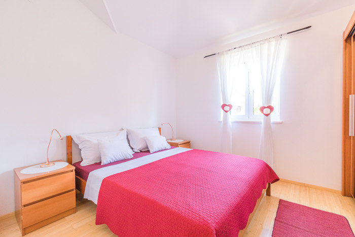
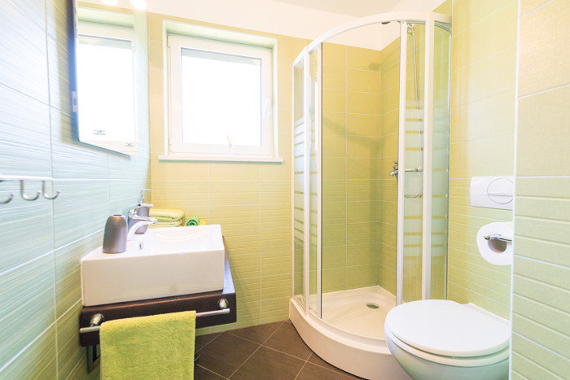

Apartman 01 / 05

Balun
Potpuno opremljen apartman u potkrovlju kuće, okrenut istoku, s privatnom terasom.
- Smještaj
- potkrovlje, istočna strana kuće
- Ležajevi
- 2+2
- Prostorije
- kuhinja, kupaonica, dnevni boravak, spavaća soba
- Vani
- privatna terasa; roštilj u vrtu u prizemlju
- Oprema
- klima uređaj, centralno grijanje, Wi-Fi, satelitska TV
- Kategorija
- 3 zvjezdice
O imenu: Plaža Balun
Na sjevernoj strani rta Glavice: prirodni amfiteatar ravnih kamenih ploča za sunčanje i kupanje. Desetak minuta šetnje ili kraće biciklom od restorana Soline.